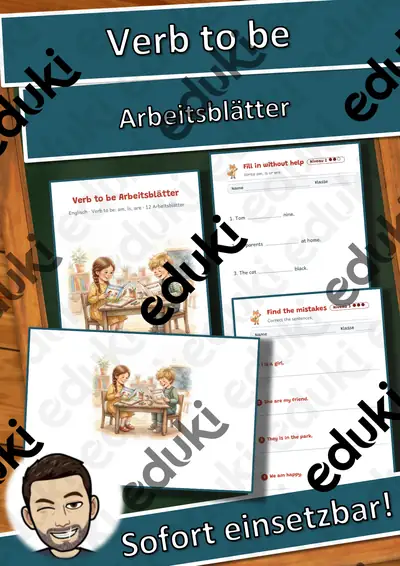
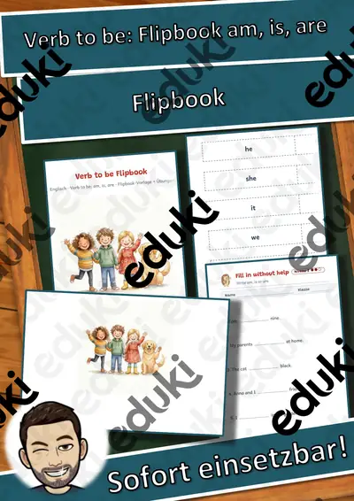
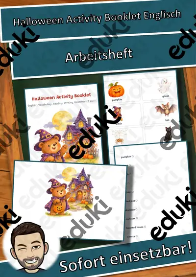
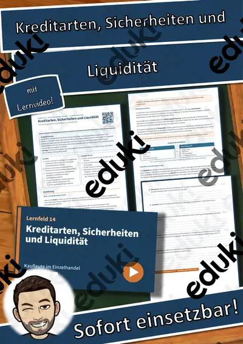
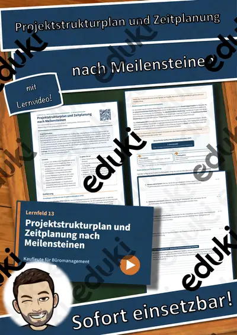
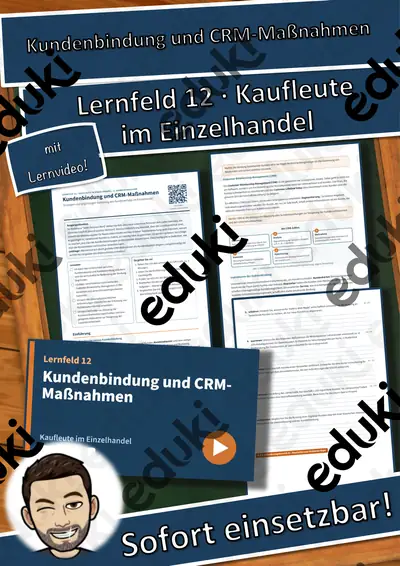
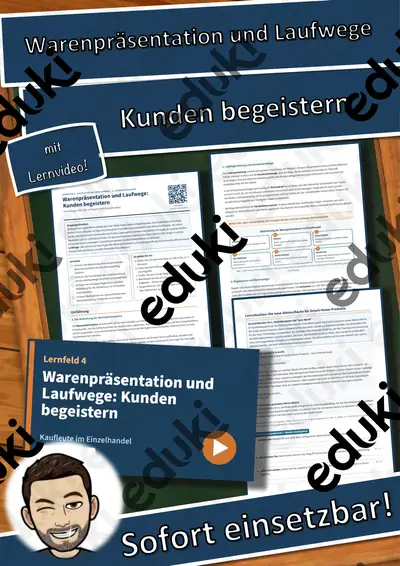

Verb to be: Arbeitsblaetter-Paket mit Loesungen

Verb to be: Flipbook am, is, are

Gruselgeschichten schreiben: Schreibwerkstatt mit Hilfen

Ich habe, wer hat? Hobbys – Lese-Schleifen – Klasse 1–4

Halloween Activity Booklet Englisch

Experimentierkartei Sachunterricht: 40 Versuche

Bewegtes Lesen: Lesen mit Laufen, Würfeln und Rätseln

Länder-Reisepass: Steckbriefe für Europa und die Welt
LF 10 Bankkaufleute: Das Magische Viereck der Wirtschaftspolitik – Übungen, Lösungen + Lernvideo

LF 6 Industriemechaniker/-in: Pneumatische Schaltpläne und Zylinderschaltungen – Übungen, Lösungen + Lernvideo

LF 14 Kaufleute im Einzelhandel: Kreditarten, Sicherheiten und Liquidität – Übungen, Lösungen + Lernvideo

Wortgitter-Suchsel: Ritter und Burg – Wortgitter – Klasse 1–4

LF 7 Fachinformatiker/-in: Betriebs- und Datensicherheit in der Steuerungstechnik – Übungen, Lösungen + Lernvideo

Wortgitter-Suchsel: Dinosaurier – Wortgitter – Klasse 1–4
LF 6 Zahnmedizinische Fachangestellte: Zahnextraktion: Instrumente, Sterilität und Wundversorgung – Übungen, Lösungen +

Wortgitter-Suchsel: Weltall – Wortgitter – Klasse 1–4

Wortgitter-Suchsel: Am Meer – Wortgitter – Klasse 1–4

LF 13 Kaufleute für Büromanagement: Projektstrukturplan und Zeitplanung nach Meilensteinen – Übungen, Lösungen + Lernvid

Wortgitter-Suchsel: Wetter – Wortgitter – Klasse 1–4

Wortgitter-Suchsel: Fahrzeuge – Wortgitter – Klasse 1–4

Wortgitter-Suchsel: Piraten – Wortgitter – Klasse 1–4

Wortgitter-Suchsel: Sport – Wortgitter – Klasse 1–4

Wortgitter-Suchsel: Ostern – Wortgitter – Klasse 1–4

LF 9 Anlagenmechaniker/-in SHK: Sicherheitseinrichtungen bei Trinkwassererwärmern – Übungen, Lösungen + Lernvideo

Wimmel-Werkstatt Tiere im Winter Materialpaket: 3 Einheiten – Sprachförderung und Sachwissen mit Wimmelbildern (Grundsch

Wimmel-Werkstatt Tiere im Winter Wimmel-Werkstatt Tiere im Winter – Einheit 3: Tierspuren und Winterfell im Schnee – Spr

Wimmel-Werkstatt Tiere im Winter Wimmel-Werkstatt Tiere im Winter – Einheit 1: Winterschlaf, Winterruhe und Winterstarre

LF 12 Kaufleute im Einzelhandel: Kundenbindung und CRM-Maßnahmen – Übungen, Lösungen + Lernvideo

LF 4 Kaufleute im Einzelhandel: Warenpräsentation und Laufwege: Kunden begeistern – Übungen, Lösungen + Lernvideo

LF 6 Fachinformatiker/-in: Support-Level, Ticketbearbeitung und Dokumentation – Übungen, Lösungen + Lernvideo
LF 12 Zahnmedizinische Fachangestellte: Bildfehler und Qualitätssicherung bei Röntgenaufnahmen – Übungen, Lösungen + Ler

Wimmel-Werkstatt Tiere im Winter Wimmel-Werkstatt Tiere im Winter – Einheit 2: Standvögel und Zugvögel im Winter – Sprac
LF 13 Verkäufer/-in: Bewerberauswahl und Einstellungsverfahren – Übungen, Lösungen + Lernvideo
LF 5 Kaufleute für Büromanagement: Werbeplanung und Zielgruppenbestimmung – Übungen, Lösungen + Lernvideo

Lernfeld 2 Anlagenmechaniker/-in SHK: Schnittparameter berechnen – Einführung, Übungen, Lösungen + Lernvideo
LF 5 Kaufleute im Einzelhandel: Grenzen der Werbung nach dem UWG – Übungen, Lösungen + Lernvideo

Himmel und Hölle: Haustiere – Himmel und Hölle – Klasse 1–4

Wort-Bild-Karten: Ritter und Burg – Wort-Bild-Karten – Klasse 1–4

Wort-Bild-Karten: Dinosaurier – Wort-Bild-Karten – Klasse 1–4

Lesen, Malen und Kleben: Familie – Lesen und Malen – Klasse 1–4

Wort-Bild-Karten: Weltall – Wort-Bild-Karten – Klasse 1–4

Lesen, Malen und Kleben: Fahrzeuge – Lesen und Malen – Klasse 1–4

Sprechanlässe: Im Restaurant – Sprechanlässe – Klasse 1–4

Sprechanlässe: Hobbys – Sprechanlässe – Klasse 1–4

Sprechanlässe: Familie – Sprechanlässe – Klasse 1–4
LF 2 Zahnmedizinische Fachangestellte: Schweigepflicht und Datenschutz in der Zahnarztpraxis – Übungen, Lösungen + Lernv

Sprechanlässe: Wilde Tiere – Sprechanlässe – Klasse 1–4

Sprechanlässe: Fahrzeuge – Sprechanlässe – Klasse 1–4
Keine Materialien gefunden – versuch einen anderen Suchbegriff oder Filter.